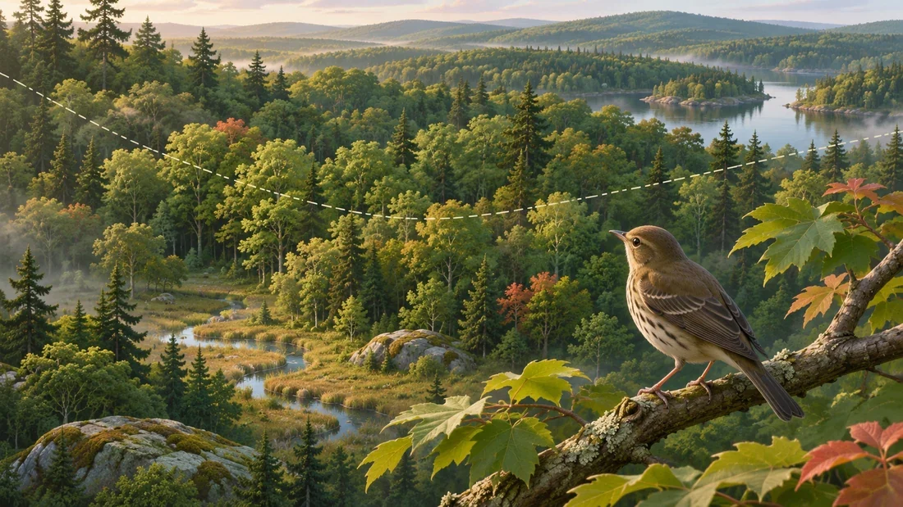

Halvtimmen · Vetenskap
Hur mycket skog ska man mäta?

Daterad fördjupning om forskningsmetod. Studien publicerades den 31 oktober 2026.
En forskare hör en skogsfågel i en park. Vilken skog ska hon mäta för att undersöka varför arten finns just där? Träden runt lyssningsplatsen, hela parken eller också skogen utanför gränsen? I åtta kulturhistoriska parker och minnesplatser i nordöstra USA prövade forskarna alla tre avgränsningarna.
Först behövde de hantera de tillfällen då ingen hörde en fågel. Vid en inventeringspunkt lyssnade en observatör i tio minuter. Forskarna delade upp tiden i fem tvåminutersintervall och tog för varje art vara på när den hördes första gången. En art kan finnas på platsen utan att höras. Modellen skattade därför både sannolikheten att arten fanns där och chansen att upptäcka den om den fanns där.
Sedan jämförde forskarna mått på skogen inom 400 meter från inventeringspunkten, i hela parken och i det omgivande förvaltningsområdet, ett amerikanskt county. De prövade för varje art vilken skala som bäst beskrev sambandet med ett visst skogsmått, exempelvis trädens täthet. Valet kunde alltså bli olika för två arter, eller för två egenskaper hos skogen.
För nio av de sexton arterna fann forskarna minst ett samband på county-nivå där modellens 80-procentiga osäkerhetsintervall låg helt på ena sidan av noll. För den som planerar nästa undersökning betyder det att även skogen utanför parkgränsen kan vara värd att mäta. Studien kan däremot inte avgöra vad som skulle hända med en viss art om någon ändrade skogen.
Källor och källvärdering
Forskningsartikeln redovisar hur lyssningen gick till, hur modellen skilde mellan förekomst och upptäckt och hur de tre skalorna prövades. Resultaten gäller sexton arter på de åtta undersökta platserna.
Forskarnas kodarkiv ger insyn i hur analysen genomfördes. Det hör till samma studie.